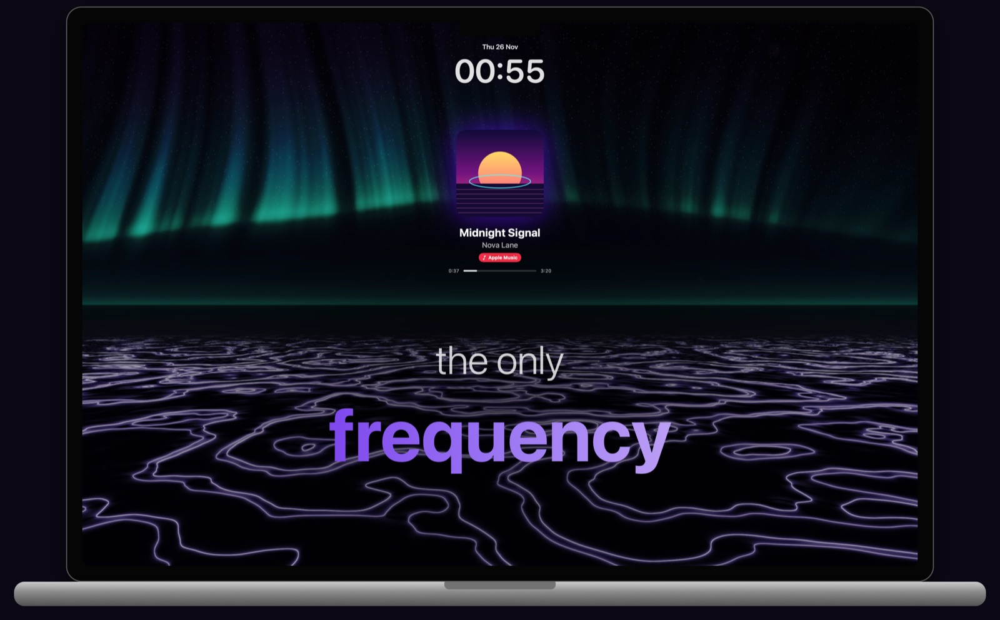
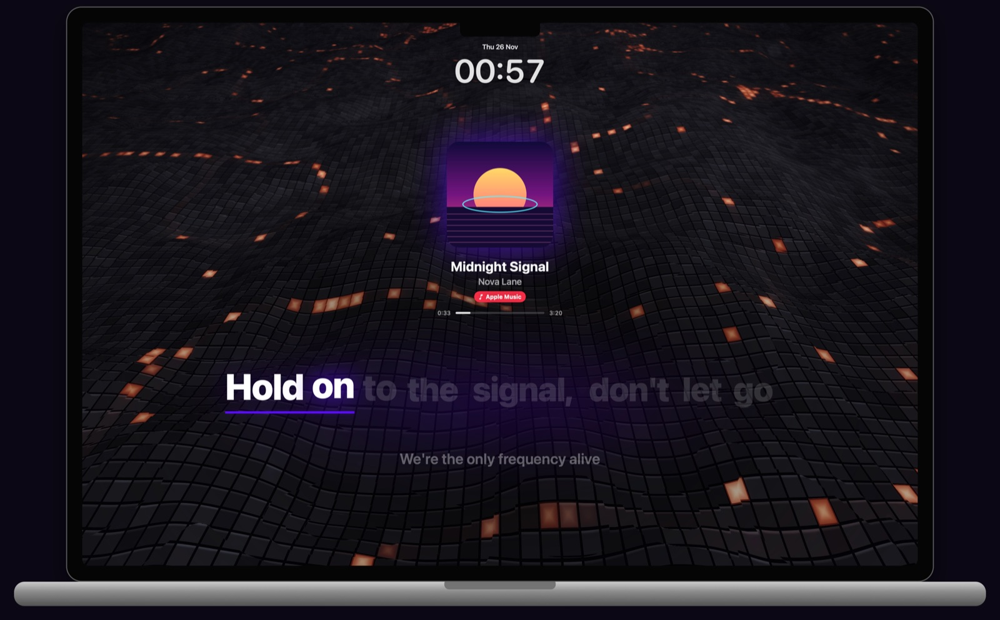
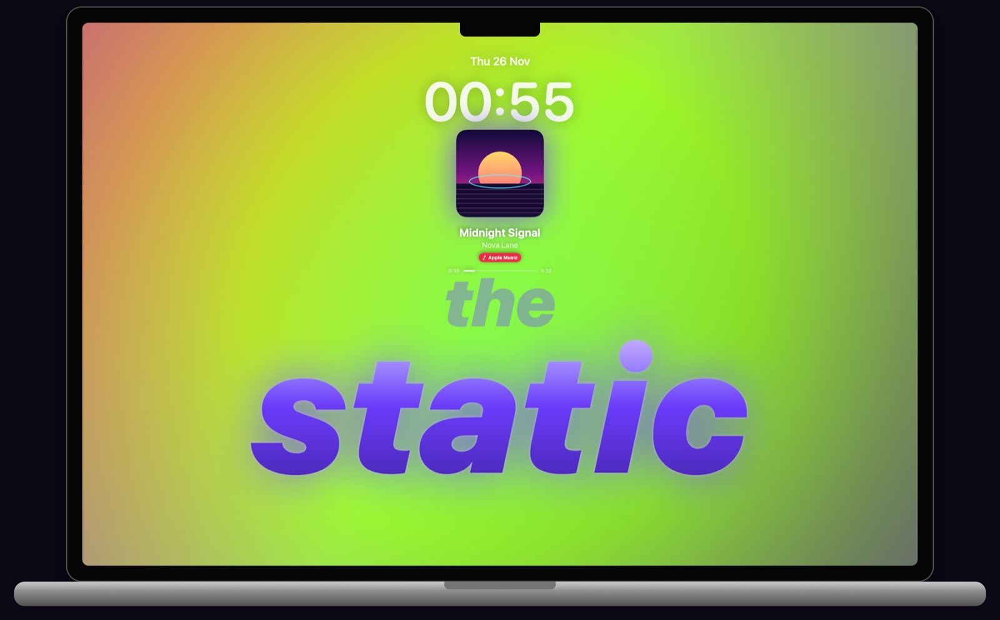
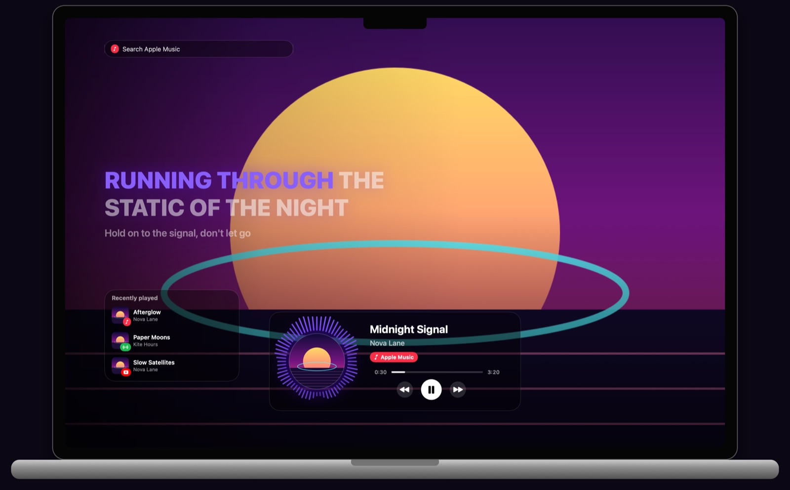
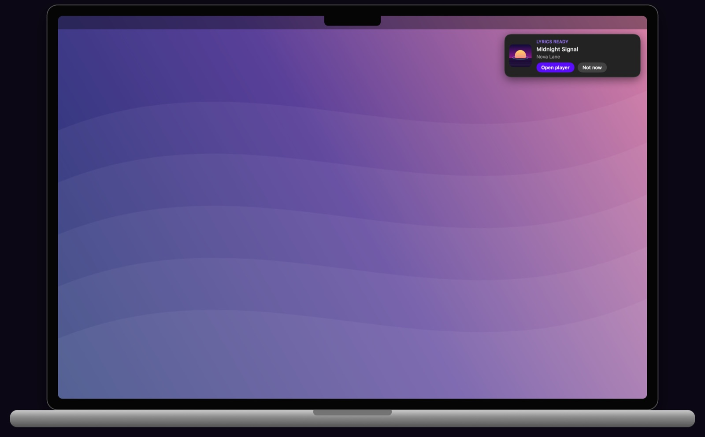

LockLyrics
Synced lyrics for whatever you play on your Mac, word by word, on the lock screen, the desktop or full screen, over 3D scenes that move with the music.
Download for MacFree · version 1.6 · 5 MB · macOS 14 or later · Apple Silicon and Intel · all versions

Seven ready-made looks
One click each, on the lock screen, the full-screen player and the desktop. Any of the ten scenes goes behind any of the 23 lyric styles too.






On your desktop, too


What it does
- Plays along with Apple Music, Spotify, and YouTube or Spotify in a browser: no setup per song.
- Lyrics on the lock screen, as a live desktop wallpaper, or in a full-screen player.
- Ten 3D scenes and 23 lyric styles that react to the beat, the bass and every sung word.
- A frame light around the screen in time with the music.
- When a song starts, a small card offers the lyrics.
- Mongolian songs work too: when the lyrics aren't found it tries again in Latin spelling, and takes the cover from your Music library when the store has none.
Install
- Open LockLyrics.dmg from Downloads and drag LockLyrics onto the Applications folder beside it.
- Open LockLyrics from Applications. LockLyrics is not notarized by Apple yet, so macOS stops it the first time: click Done, open System Settings → Privacy & Security, scroll down and click Open Anyway next to LockLyrics, then confirm. You only do this once.
On macOS 14 you can instead right-click LockLyrics in Applications and choose Open. - The welcome page asks for what it needs, one button each: your music players, the sound your Mac plays (for the beat) and Open at login.
- Play a song. LockLyrics lives in the menu bar (the music-note icon at the top right of the screen): open it there for the full-screen player and the settings. Lock your Mac to see the lyrics on the lock screen.
Privacy
The playing song's title and artist are sent to lyric and artwork services (LRCLIB, NetEase, the iTunes Search API, TheAudioDB, Deezer) to find its lyrics and pictures. The sound is analysed on your Mac for the beat and never recorded or sent. The lyrics and covers of songs you play are kept on your Mac so they show at once next time; Settings clears them. No accounts, no analytics, no tracking.